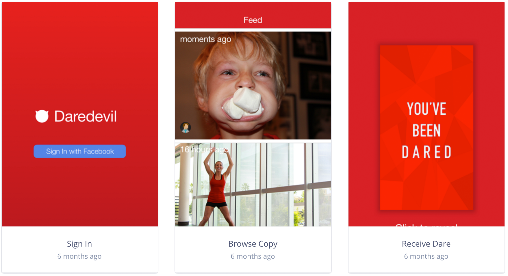

Social multiplayer Truth-or-Dare App
This project was an idea used for the 02.010 Entrepreneurship course. It was done with a group of friends from the Information Systems Technology and Design (ISTD) pillar. I was involved in the conceptualisation and game mechanics design, which stems from the traditional “truth or dare” party game. I also designed the user interface and graphics of the game, finally prototyping it using Sketch app. This prototype was then used as a basis for my groupmates for developing the final working app. The closed Beta of Daredevil was released to 20 participants to interact and play the actual game with a small set of "Dare" tasks.
